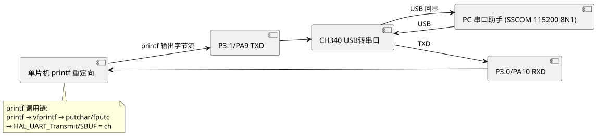

实验11 标准 printf 函数实现
printf 是 C 语言标准库最常用的格式化输出函数，能直接输出 %d %s %x %f 等格式数据，远比手工 UART_SendString + itoa 拼接方便。本实验在 STC89C52RC（8 位）与 STM32F407（32 位）两个平台上分别实现 printf 到串口的重定向：STC 通过重写 putchar 钩子接入 Keil C51 的 printf 流；STM32 通过重写 fputc（Keil MDK）或 __io_putchar（STM32CubeIDE）接入 ARM C 库的 printf 流。掌握这一技术后，调试信息输出效率大幅提升。完整工程源码见 /code/stc89c52rc/11-printf/ 与 /code/stm32f407/11-hal-printf/。
一、实验目的
- 理解 C 标准库
printf的底层调用链与"字符输出钩子"机制。 - 掌握 STC89C52RC（Keil C51）重写
putchar实现 printf 串口重定向。 - 掌握 STM32F407（HAL 库）重写
fputc/__io_putchar实现 printf 串口重定向。 - 理解 MicroLIB、半主机模式（Semihosting）、浮点格式化等工程常见坑。
- 能使用 printf 输出多种格式（含
%f浮点、%ld长整型）的调试日志。
二、知识点
- printf 调用链：用户
printf("x=%d", x)→ C 库 vfprintf 格式化 → 内部循环调用字符输出钩子_putchar/__io_putchar/fputc→ 该钩子由用户重写为"写一个字节到 UART"。 - Keil C51 的 putchar：C51 库 printf 默认调用
putchar(char c)，用户只需在 main.c 中重写该函数即可重定向。无需 MicroLIB，C51 库本身已精简。 - Keil MDK 的 fputc：ARM C 库 printf 调用
fputc(int ch, FILE *f)，重写该函数即可。需在 Project Options → Target 勾选 "Use MicroLIB" 以减小代码体积并避免半主机模式卡死。 - STM32CubeIDE 的 __io_putchar：基于 GCC newlib-nano，syscalls.c 已桥接
_write → __io_putchar，用户重写__io_putchar即可。 - 半主机模式（Semihosting）：未重写钩子时 printf 会触发 BKPT 指令请求调试器代为输出，脱离调试器运行即卡死。重写钩子后自动关闭半主机。
- MicroLIB：ARM 的精简 C 库，体积约标准库 1/3，默认支持
%d %s %x %f，是嵌入式首选。 - newlib-nano：GCC 的精简 C 库，效果等同 MicroLIB，STM32CubeIDE 默认启用。
- \n 自动回车：串口终端通常 \n 不带回车，需在钩子中检测到
'\n'先输出'\r'，否则显示阶梯状错位。 - 性能对比：阻塞式 printf 在 115200 bps 下每字符约 87 μs，连续输出会占满 CPU；实时性敏感场景应用 DMA + 环形队列 printf。
三、硬件清单
| 序号 | 器材 | 规格 | 数量 | 备注 |
|---|---|---|---|---|
| 1 | STC89C52RC 板 | 11.0592 MHz, USB 转串口 CH340 | 1 | — |
| 2 | STM32F407VET6 板 | 板载 USB 转串口 | 1 | — |
| 3 | USB 线 | — | 1 | 连接 PC |
| 4 | PC | 串口助手软件 | 1 | SSCOM/XCOM/MobaXterm |
四、电路连接
STC89C52RC 板载 USB 转串口芯片 (CH340)，单片机 P3.0 (RXD)、P3.1 (TXD) 经 CH340 连接 PC USB。STM32F407 的 USART1 (PA9=TX, PA10=RX) 同样经板载 CH340 连 PC。无需额外连线，插 USB 即可。

查看 PlantUML 源码
@startuml
skinparam defaultFontName "Microsoft YaHei"
skinparam backgroundColor #ffffff
left to right direction
component "PC 串口助手\n(SSCOM 115200 8N1)" as PC
component "CH340\nUSB转串口" as CH1
component "P3.1/PA9 TXD" as TXD1
component "单片机\nprintf 重定向" as MCU1
component "P3.0/PA10 RXD" as RXD1
PC --> CH1 : USB
CH1 --> RXD1 : TXD
RXD1 --> MCU1
MCU1 --> TXD1 : printf 输出字节流
TXD1 --> CH1
CH1 --> PC : USB 回显
note bottom of MCU1
printf 调用链:
printf → vfprintf → putchar/fputc
→ HAL_UART_Transmit/SBUF = ch
end note
@enduml五、代码框架
5.1 STC89C52RC 重写 putchar 实现 printf
工程 /code/stc89c52rc/11-printf/main.c。波特率 115200，8N1，SMOD=1。Keil C51 编译。
#include <reg52.h>
#include <stdio.h> /* printf 函数声明 */
/* 串口初始化：方式 1，115200 @11.0592MHz，SMOD=1 */
void UART_Init(void) {
SCON = 0x50; /* 方式1, 8位UART, REN=1 */
PCON |= 0x80; /* SMOD=1 倍频 */
TMOD &= 0x0F;
TMOD |= 0x20; /* T1 方式2 自动重装 */
TH1 = 0xFC; /* 115200 */
TL1 = 0xFC;
TR1 = 1;
ES = 1;
EA = 1;
}
/* 重写 putchar：C51 printf 底层调用此函数 */
char putchar(char c) {
if (c == '\n') { /* 自动回车 */
SBUF = '\r';
while (!TI);
TI = 0;
}
SBUF = c; /* 写 SBUF 启动发送 */
while (!TI); /* 等待发送完成 */
TI = 0; /* 软件清 TI */
return c;
}
void main(void) {
unsigned int loop = 0;
float temp = 25.6f;
UART_Init();
printf("\r\n============================\r\n");
printf(" STC89C52RC printf 重定向演示\r\n");
printf(" 晶振: 11.0592 MHz, 波特率: 115200\r\n");
printf("============================\r\n");
while (1) {
loop++;
printf("loop=%u, temp=%.2f C\r\n", loop, temp);
/* 注意：C51 printf 默认不支持 %f 浮点
* 需在 Options → Target → Code Generation →
* 勾选 "Use floating-point support" 并链接 -u _printf_float
* 或改为 %d 输出整数：temp_x10 = 256 */
temp += 0.1f;
if (temp > 30.0f) temp = 25.0f;
/* 简易延时 */
{
unsigned int i, j;
for (i = 0; i < 1000; i++)
for (j = 0; j < 100; j++);
}
}
}%f %e %g。需要浮点输出时，在 Project Options → BL51/BL51 Locate → Additional → 输入 ?C?CLD 或在源码顶部加 #pragma printf(f)。C51 浮点 printf 体积约增加 1KB，资源紧张时建议改用 %d 输出整数（如 temp×10）。
5.2 STM32F407 重写 fputc 实现 printf（Keil MDK + HAL 库）
工程 /code/stm32f407/11-hal-printf/main.c。USART1 PA9/PA10，115200 8N1。需在 Project Options → Target 勾选 "Use MicroLIB"。
/* main.c - STM32F407 printf 重定向
* Keil MDK + HAL 库 + MicroLIB
* USART1: PA9(TX) PA10(RX), 115200 8N1
*/
#include "stm32f4xx_hal.h"
#include <stdio.h>
UART_HandleTypeDef huart1;
void MX_USART1_UART_Init(void) {
__HAL_RCC_USART1_CLK_ENABLE();
__HAL_RCC_GPIOA_CLK_ENABLE();
GPIO_InitTypeDef gpio = {0};
gpio.Pin = GPIO_PIN_9 | GPIO_PIN_10;
gpio.Mode = GPIO_MODE_AF_PP;
gpio.Pull = GPIO_PULLUP;
gpio.Speed = GPIO_SPEED_FREQ_VERY_HIGH;
gpio.Alternate = GPIO_AF7_USART1;
HAL_GPIO_Init(GPIOA, &gpio);
huart1.Instance = USART1;
huart1.Init.BaudRate = 115200;
huart1.Init.WordLength = UART_WORDLENGTH_8B;
huart1.Init.StopBits = UART_STOPBITS_1;
huart1.Init.Parity = UART_PARITY_NONE;
huart1.Init.Mode = UART_MODE_TX_RX;
huart1.Init.HwFlowCtl = UART_HWCONTROL_NONE;
HAL_UART_Init(&huart1);
}
/* USER CODE BEGIN 4 */
/* 重写 fputc：让 printf 走 USART1 */
int fputc(int ch, FILE *f)
{
(void)f;
if (ch == '\n') { /* 自动回车 */
uint8_t cr = '\r';
HAL_UART_Transmit(&huart1, &cr, 1, 0xFFFF);
}
uint8_t c = (uint8_t)ch;
HAL_UART_Transmit(&huart1, &c, 1, 0xFFFF); /* 阻塞发送 1 字节 */
return ch;
}
/* USER CODE END 4 */
int main(void)
{
HAL_Init();
SystemClock_Config();
MX_USART1_UART_Init();
printf("\r\n============================\r\n");
printf(" STM32F407 printf 重定向演示\r\n");
printf(" HAL 版本: 0x%08lX\r\n", HAL_GetHalVersion());
printf(" 系统时钟: %lu Hz\r\n", SystemCoreClock);
printf("============================\r\n");
float temp = 25.6f;
uint32_t loop = 0;
while (1) {
loop++;
printf("loop=%lu, temp=%.2f C, tick=%lu ms\r\n",
loop, temp, HAL_GetTick());
temp += 0.1f;
if (temp > 30.0f) temp = 25.0f;
HAL_Delay(1000);
}
}5.3 STM32CubeIDE 重写 __io_putchar（newlib-nano）
STM32CubeIDE 默认使用 GCC newlib-nano，syscalls.c 已桥接 _write → __io_putchar，只需在 main.c 中定义 __io_putchar：
/* main.c - STM32CubeIDE + newlib-nano */
#include <stdio.h>
#include "usart.h"
/* newlib-nano 通过 syscalls.c 调用此函数 */
int __io_putchar(int ch)
{
if (ch == '\n') {
uint8_t cr = '\r';
HAL_UART_Transmit(&huart1, &cr, 1, 0xFFFF);
}
uint8_t c = (uint8_t)ch;
HAL_UART_Transmit(&huart1, &c, 1, 0xFFFF);
return ch;
}
int main(void)
{
HAL_Init();
SystemClock_Config();
MX_USART1_UART_Init();
printf("CubeIDE printf demo, tick=%lu\r\n", HAL_GetTick());
while (1) { }
}HAL_UART_Transmit 在 115200 bps 下连续 printf 会占满 CPU。工程实践首选方案：
- 定义发送缓冲
uint8_t tx_buf[128]，vsnprintf格式化到缓冲。 - 调用
HAL_UART_Transmit_DMA(&huart1, tx_buf, len)，DMA 搬运完成后中断回调释放缓冲。 - 实现"环形队列"避免前次未发完就被覆盖。
- 未勾选 MicroLIB（MDK）：默认链接完整 ARM C 库，printf 体积约 8KB 且可能因半主机模式导致运行到
__use_no_semihosting卡死。勾选 MicroLIB 即解决。 - 半主机模式：未重写 fputc 时 printf 会触发 BKPT 指令进入调试器，脱离调试器运行即卡死。重写 fputc 后自动关闭半主机。
- 浮点不支持：STM32F4 默认 FPU 开启，但 printf 浮点需在 Linker → Misc 加
-u _printf_float（GCC）或勾选 MicroLIB（MDK）。 - 多线程：FreeRTOS 多任务同时 printf 会乱序，需用互斥量
osMutexAcquire包裹或改用 SEGGER RTT。 - printf 死锁：在中断服务函数中调用 printf（其内部又开中断/关中断）会导致死锁。中断中应只置标志位，主循环再 printf。
六、调试要点
- 波特率匹配：PC 串口助手必须 115200 8N1，否则乱码。
- 自动回车：检查钩子中
'\n'是否先输出'\r'，否则 PC 端显示阶梯状。 - STC 晶振核对：11.0592 MHz 晶振必须与代码中 TH1 计算一致。
- MicroLIB 勾选：MDK 工程 Project → Options → Target → 勾选 "Use MicroLIB"，否则 printf 卡死。
- HAL_UART_Transmit 超时：参数 0xFFFF 表示最大超时；若硬件接线错（TX/RX 反接）会超时返回 HAL_TIMEOUT。
- 串口助手回显：先发一个 "Hello\r\n" 确认链路通，再测复杂格式。
- printf 不输出：① 检查 huart1 是否已 Init；② 检查 GPIO 复用配置（AF7_USART1）；③ 检查 MicroLIB；④ 检查 fputc 是否在 USER CODE BEGIN 4 区域内（避免 CubeMX 重新生成时被覆盖）。
- 浮点输出 0.00：MDK 勾选 MicroLIB；GCC 在 Linker flags 加
-u _printf_float。
七、思考题
- 简述 printf 从用户调用到串口字节输出的完整调用链，并说明每个环节的作用。
- Keil C51 与 Keil MDK 在 printf 重定向上的差异是什么？为什么 C51 不需要 MicroLIB？
- 什么是半主机模式？为什么未重写 fputc 时脱离调试器会卡死？如何避免？
- 设计一个 DMA + 环形队列的非阻塞 printf 方案，画出数据流框图，并说明如何处理"前次未发完就被覆盖"问题。
- 对比 printf、逻辑分析仪、SEGGER RTT 三种调试输出方式，各举一个适用场景。
- FreeRTOS 多任务环境下，如何安全使用 printf？简述互斥量包裹方案与 SEGGER RTT 方案的优缺点。